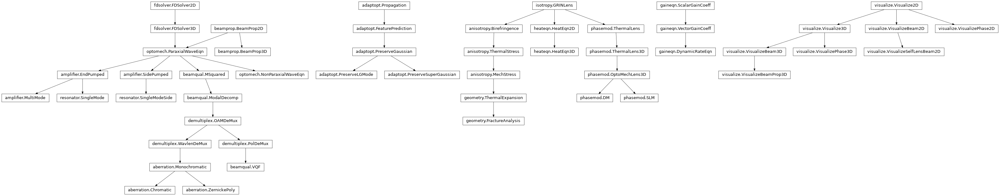

Quick Start¶
Getting Started Guide
Documentation¶
Photonicslab's Documentation:
API¶

- Application Programming Interface
- photonicslab.isotropy
- photonicslab.isotropy.GRINLens
- photonicslab.isotropy.GRINLens.index_distr
- photonicslab.isotropy.GRINLens.get_GRIN_focal_len
- photonicslab.isotropy.GRINLens.remove_strain
- photonicslab.isotropy.GRINLens.remove_stress
- photonicslab.isotropy.GRINLens.add_supergaussian_displacement_field
- photonicslab.isotropy.GRINLens.plot_source_fields
- photonicslab.isotropy.GRINLens.thermal_stress
- photonicslab.isotropy.GRINLens.linear_displacement_strain
- photonicslab.isotropy.GRINLens.effective_strain
- photonicslab.heateqn
- photonicslab.heateqn.HeatEqn2D
- photonicslab.heateqn.HeatEqn2D.add_supergaussian
- photonicslab.heateqn.HeatEqn2D.add_supergaussian_ring
- photonicslab.heateqn.HeatEqn2D.add_supergaussian_block
- photonicslab.heateqn.HeatEqn2D.add_source_from_image
- photonicslab.heateqn.HeatEqn2D.add_source_from_hdf5
- photonicslab.heateqn.HeatEqn2D.add_gaussian
- photonicslab.heateqn.HeatEqn2D.add_flattop
- photonicslab.heateqn.HeatEqn2D.add_flattop_ring
- photonicslab.heateqn.HeatEqn2D.add_flattop_block
- photonicslab.heateqn.HeatEqn2D.remove_sources
- photonicslab.heateqn.HeatEqn2D.plot_source_profile
- photonicslab.heateqn.HeatEqn2D.get_explicit_fd_params
- photonicslab.heateqn.HeatEqn2D.get_cn_fd_params
- photonicslab.heateqn.HeatEqn3D
- photonicslab.heateqn.HeatEqn3D.add_normalized_pump_gaussian
- photonicslab.heateqn.HeatEqn3D.remove_sources
- photonicslab.heateqn.HeatEqn3D.plot_source_profile
- photonicslab.heateqn.HeatEqn3D.get_explicit_fd_params
- photonicslab.heateqn.HeatEqn3D.get_cn_fd_params
- photonicslab.fdsolver
- photonicslab.fdsolver.FDSolver2D
- photonicslab.fdsolver.FDSolver2D.explicit_method
- photonicslab.fdsolver.FDSolver2D.explicit_method_hdf
- photonicslab.fdsolver.FDSolver3D
- photonicslab.fdsolver.FDSolver3D.vectorize
- photonicslab.fdsolver.FDSolver3D.implicit_method
- photonicslab.fdsolver.FDSolver3D.implicit_cupy_method
- photonicslab.fdsolver.FDSolver3D.implicit_pycuda_method
- photonicslab.fdsolver.FDSolver3D.implicit_tf_method
- photonicslab.fdsolver.FDSolver3D.adi_method
- photonicslab.fdsolver.FDSolver3D.tdma_solver
- photonicslab.fdsolver.FDSolver3D.explicit_method
- photonicslab.phasemod
- photonicslab.phasemod.ThermalLens
- photonicslab.phasemod.ThermalLens.parabolic_fit
- photonicslab.phasemod.ThermalLens.phase
- photonicslab.phasemod.ThermalLens3D
- photonicslab.phasemod.ThermalLens3D.phase_heat
- photonicslab.phasemod.OptoMechLens3D
- photonicslab.phasemod.OptoMechLens3D.phase_stress
- photonicslab.phasemod.OptoMechLens3D.phase_strain
- photonicslab.phasemod.SLM
- photonicslab.phasemod.SLM.generate_screen
- photonicslab.phasemod.DM
- photonicslab.beamprop
- photonicslab.beamprop.BeamProp2D
- photonicslab.beamprop.BeamProp2D.lg_mode
- photonicslab.beamprop.BeamProp2D.convolve
- photonicslab.beamprop.BeamProp2D.modulate
- photonicslab.beamprop.BeamProp3D
- photonicslab.beamprop.BeamProp3D.convolve
- photonicslab.beamqual
- photonicslab.beamqual.MSquared
- photonicslab.beamqual.MSquared.measure_focal_length
- photonicslab.beamqual.MSquared.measure_waist_first_null
- photonicslab.beamqual.MSquared.measure_waist_variance
- photonicslab.beamqual.MSquared.measure_waist_fwhm
- photonicslab.beamqual.MSquared.measure_quality
- photonicslab.beamqual.MSquared.lens_func
- photonicslab.beamqual.MSquared.convolve
- photonicslab.beamqual.MSquared.plot_quality_profile
- photonicslab.beamqual.MSquared.plot_second_focal_plane
- photonicslab.beamqual.MSquared.plot_fourth_focal_plane
- photonicslab.beamqual.ModalDecomp
- photonicslab.beamqual.VQF
- photonicslab.optomech
- photonicslab.optomech.ParaxialWaveEqn
- photonicslab.optomech.ParaxialWaveEqn.lg_mode
- photonicslab.optomech.ParaxialWaveEqn.convolve
- photonicslab.optomech.ParaxialWaveEqn.modulate
- photonicslab.optomech.ParaxialWaveEqn.vectorize
- photonicslab.optomech.ParaxialWaveEqn.implicit_method
- photonicslab.optomech.ParaxialWaveEqn.adi_method
- photonicslab.optomech.ParaxialWaveEqn.convolve
- photonicslab.optomech.ParaxialWaveEqn.mirror_phase_factor
- photonicslab.optomech.ParaxialWaveEqn.surface_deformation_phase_factor
- photonicslab.optomech.ParaxialWaveEqn.free_space_implicit
- photonicslab.optomech.ParaxialWaveEqn.free_space_adi_method
- photonicslab.optomech.ParaxialWaveEqn.tdma_solver
- photonicslab.optomech.NonParaxialWaveEqn
- photonicslab.anisotropy
- photonicslab.anisotropy.Birefringence
- photonicslab.anisotropy.MechStress
- photonicslab.anisotropy.ThermalStress
- photonicslab.geometry
- photonicslab.geometry.ThermalExpansion
- photonicslab.geometry.FractureAnalysis
- photonicslab.gaineqn
- photonicslab.gaineqn.ScalarGainCoeff
- photonicslab.gaineqn.VectorGainCoeff
- photonicslab.gaineqn.DynamicRateEqn
- photonicslab.amplifier
- photonicslab.amplifier.EndPumped
- photonicslab.amplifier.EndPumped.vectorize
- photonicslab.amplifier.EndPumped.implicit_method
- photonicslab.amplifier.EndPumped.adi_method
- photonicslab.amplifier.EndPumped.tdma_solver
- photonicslab.amplifier.SidePumped
- photonicslab.amplifier.MultiMode
- photonicslab.resonator
- photonicslab.resonator.SingleMode
- photonicslab.resonator.SingleModeSide
- photonicslab.demultiplex
- photonicslab.demultiplex.OAMDeMux
- photonicslab.demultiplex.WavlenDeMux
- photonicslab.demultiplex.PolDeMux
- photonicslab.adaptopt
- photonicslab.adaptopt.Propagation
- photonicslab.adaptopt.FeaturePrediction
- photonicslab.adaptopt.PreserveGaussian
- photonicslab.adaptopt.PreserveSuperGaussian
- photonicslab.adaptopt.PreserveLGMode
- photonicslab.aberration
- photonicslab.aberration.Monochromatic
- photonicslab.aberration.Chromatic
- photonicslab.aberration.ZernickePoly
- photonicslab.visualize
- photonicslab.visualize.Visualize2D
- photonicslab.visualize.Visualize2D.steadystate_profiles
- photonicslab.visualize.Visualize2D.transient_profiles
- photonicslab.visualize.VisualizePhase2D
- photonicslab.visualize.VisualizePhase2D.steadystate_profiles
- photonicslab.visualize.VisualizePhase2D.transient_profiles
- photonicslab.visualize.VisualizeBeam2D
- photonicslab.visualize.VisualizeBeam2D.add_filter_circular
- photonicslab.visualize.VisualizeBeam2D.add_filter_rectangular
- photonicslab.visualize.VisualizeBeam2D.steadystate_profiles
- photonicslab.visualize.VisualizeBeam2D.transient_profiles
- photonicslab.visualize.VisualizeSelfLensBeam2D
- photonicslab.visualize.VisualizeSelfLensBeam2D.steadystate_profiles
- photonicslab.visualize.VisualizeSelfLensBeam2D.transient_profiles
- photonicslab.visualize.Visualize3D
- photonicslab.visualize.Visualize3D.steadystate_profiles
- photonicslab.visualize.Visualize3D.steadystate_source_profiles
- photonicslab.visualize.Visualize3D.transient_profiles
- photonicslab.visualize.VisualizePhase3D
- photonicslab.visualize.VisualizeBeam3D
- photonicslab.visualize.VisualizeBeamProp3D
Indices and tables¶
TODO List¶
Todo
Generate phase profiles.
Extend to 3D case.
Consider effects of thermal expansion and thermal diffusivity.
Move constructor details of dndT, nbc seedwl=1064 etc to beamprop phase profile section. Or write get method here.
Consolidate gain media properties into materials database.
(The original entry is located in /home/nlisa/course/photonicslab/photonicslab/amplifier.py:docstring of photonicslab.amplifier, line 6.)
Todo
TODO: Consolidate all __init__ method.
TODO: Need to incorporate this into the resonator model.
TODO: Registering material variables k0 and n0
(The original entry is located in /home/nlisa/course/photonicslab/photonicslab/amplifier.py:docstring of photonicslab.amplifier.EndPumped, line 49.)
Todo
Compare SO Solve TDM using solve banded
(The original entry is located in /home/nlisa/course/photonicslab/photonicslab/fdsolver.py:docstring of photonicslab.amplifier.EndPumped.tdma_solver, line 9.)
Todo
Accelerate this with
numba.jit.
(The original entry is located in /home/nlisa/course/photonicslab/photonicslab/amplifier.py:docstring of photonicslab.amplifier.EndPumped.vectorize, line 13.)
Todo
Generate phase profiles.
Extend to 3D case.
Consider effects of thermal expansion and thermal diffusivity.
Move constructor details of dndT, nbc seedwl=1064 etc to beamprop phase profile section. Or write get method here.
Consolidate gain media properties into materials database.
(The original entry is located in /home/nlisa/course/photonicslab/photonicslab/anisotropy.py:docstring of photonicslab.anisotropy, line 6.)
Todo
Add hg and other modes
Overload addition operator for object oriented superposition and interaction of modes.
Write propagation output to hdf5
Consolidate units to SI or some other standard.
Seed to become a class instance variable, i.e. self.seed = gen_LG
Use decorator function @property to set and retrieve values
Consolidate focal lengths, Rayleigh range and focus due to lens.
Instantiate seed and seed_area class objects
TODO: Note that everything’s been made relative to cm
(The original entry is located in /home/nlisa/course/photonicslab/photonicslab/beamprop.py:docstring of photonicslab.beamprop.BeamProp2D, line 43.)
Todo
Consolidate class function return values into instance variables using setter and getter decorators.
(The original entry is located in /home/nlisa/course/photonicslab/photonicslab/beamprop.py:docstring of photonicslab.beamprop.BeamProp2D.convolve, line 32.)
Todo
Try / Except blocks for zerodivision or valueerror if waist=0 and for p and l indices.
Normalise variables using sklearn.
FIXME: Wavelength dependency of index of refraction \(n(\lambda)\)
(The original entry is located in /home/nlisa/course/photonicslab/photonicslab/beamprop.py:docstring of photonicslab.beamprop.BeamProp2D.lg_mode, line 45.)
Todo
Define seed as class instance variable self.seed = gen_LG().
FIXME: Test if e0 is 3-dimensional i.e. [t,x,y]
TODO: Fix ordering of indices [x, y, t]
TODO: Fix for 2D vs 3D invariant
(The original entry is located in /home/nlisa/course/photonicslab/photonicslab/beamprop.py:docstring of photonicslab.beamprop.BeamProp2D.modulate, line 9.)
Todo
TODO: Add functions for mirrors and output couplers etc.
TODO: Note that everything’s been made relative to cm
TODO: 3D Propagation means having beam properties across crystal.
(The original entry is located in /home/nlisa/course/photonicslab/photonicslab/beamprop.py:docstring of photonicslab.beamprop.BeamProp3D, line 5.)
Todo
Consolidate class function return values into instance variables using setter and getter decorators.
(The original entry is located in /home/nlisa/course/photonicslab/photonicslab/beamprop.py:docstring of photonicslab.beamprop.BeamProp3D.convolve, line 32.)
Todo
TODO: This class should inherit from optomech.ParaxialWaveEqn
TODO: Additionally there’s the convolution based beam propagation, and then the fem-bpm
(The original entry is located in /home/nlisa/course/photonicslab/photonicslab/beamqual.py:docstring of photonicslab.beamqual.MSquared, line 52.)
Todo
Consolidate class function return values into instance variables using setter and getter decorators.
(The original entry is located in /home/nlisa/course/photonicslab/photonicslab/beamqual.py:docstring of photonicslab.beamqual.MSquared.convolve, line 32.)
Todo
TODO: Generalize logic to find 2 peaks independently in x and y. (Double the searches though)
TODO: Exception handling.
(The original entry is located in /home/nlisa/course/photonicslab/photonicslab/beamqual.py:docstring of photonicslab.beamqual.MSquared.measure_focal_length, line 67.)
Todo
TODO: Calculate beam centroid for xbar/x0 and ybar/y0, for off axis beams, maybe.
TODO: Add exception handling for focal length and waist detection.
TODO: Debug 1D array side h5py dataset
(The original entry is located in /home/nlisa/course/photonicslab/photonicslab/beamqual.py:docstring of photonicslab.beamqual.MSquared.measure_quality, line 16.)
Todo
TODO: Frame images for zy0 and wy0 as well in title.
(The original entry is located in /home/nlisa/course/photonicslab/photonicslab/beamqual.py:docstring of photonicslab.beamqual.MSquared.plot_quality_profile, line 8.)
Todo
TODO: Figure out a way to consolidate visualizations
(The original entry is located in /home/nlisa/course/photonicslab/photonicslab/beamqual.py:docstring of photonicslab.beamqual.MSquared.plot_second_focal_plane, line 53.)
Todo
set __getter__ to return CGH
(The original entry is located in /home/nlisa/course/photonicslab/photonicslab/beamqual.py:docstring of photonicslab.beamqual.ModalDecomp, line 3.)
Todo
Separate out terms into \(u, u_{t}, u_{x}, u_{xx}, u_{y}, u_{yy}\) etc for readability
Add implicit method
Extend to 3D
(The original entry is located in /home/nlisa/course/photonicslab/photonicslab/fdsolver.py:docstring of photonicslab.fdsolver, line 7.)
Todo
Add check for convergence and reshape fsol
(The original entry is located in /home/nlisa/course/photonicslab/photonicslab/fdsolver.py:docstring of photonicslab.fdsolver.FDSolver2D.explicit_method, line 8.)
Todo
Add check for convergence and reshape fsol
(The original entry is located in /home/nlisa/course/photonicslab/photonicslab/fdsolver.py:docstring of photonicslab.fdsolver.FDSolver2D.explicit_method_hdf, line 8.)
Todo
TODO: Document “book-keeping” issues, mapping 3D temperature array to 1D vector.
Need to move hdf5 databases to group format and manage their creation / deletion in base and child constructors.
Dereference hdf5 as variable: i.e. dset2 =grp.create_dataset(“qinit”) or Tsol = hf[fdsol/temperature]
Implement stopping condition when working in region with a source / temperature change.
Need to verify order and arrangement of indices, CHECK shape assignments.
Resolve circular generation and dependencies of Fdrive, meshgrids, ranges and linspaces.
Current configuration does not easily permit implementation of time-dependent sources.
(The original entry is located in /home/nlisa/course/photonicslab/photonicslab/fdsolver.py:docstring of photonicslab.fdsolver.FDSolver3D, line 20.)
Todo
Compare SO Solve TDM using solve banded
(The original entry is located in /home/nlisa/course/photonicslab/photonicslab/fdsolver.py:docstring of photonicslab.fdsolver.FDSolver3D.tdma_solver, line 9.)
Todo
Accelerate this with
numba.jit.
(The original entry is located in /home/nlisa/course/photonicslab/photonicslab/fdsolver.py:docstring of photonicslab.fdsolver.FDSolver3D.vectorize, line 10.)
Todo
Generate phase profiles.
Extend to 3D case.
Consider effects of thermal expansion and thermal diffusivity.
Move constructor details of dndT, nbc seedwl=1064 etc to beamprop phase profile section. Or write get method here.
Consolidate gain media properties into materials database.
(The original entry is located in /home/nlisa/course/photonicslab/photonicslab/heateqn.py:docstring of photonicslab.heateqn, line 6.)
Todo
Test meshgrid creation with sparse matrices.
Make sure to catch things like nd:ylf etc, don’t want to pass on nd alone in exceptions.
Consider using kwargs for methods with more than6 parameters, eg see numpy.meshgrid docs.
Complete add_supergaussian() and replace add_gaussian and add_flattop with calls to add_supergaussian in their respective limits.
(The original entry is located in /home/nlisa/course/photonicslab/photonicslab/heateqn.py:docstring of photonicslab.heateqn.HeatEqn2D, line 118.)
Todo
Check for rollover/wraparound/reflect, and make that section zero.
Exception handling and testing.
(The original entry is located in /home/nlisa/course/photonicslab/photonicslab/heateqn.py:docstring of photonicslab.heateqn.HeatEqn2D.add_source_from_image, line 81.)
Todo
Replace maxshape numbers with class constants.
(The original entry is located in /home/nlisa/course/photonicslab/photonicslab/heateqn.py:docstring of photonicslab.heateqn.HeatEqn2D.get_explicit_fd_params, line 35.)
Todo
FIXME: Exception handling and warnings for bad nt_plot values
(The original entry is located in /home/nlisa/course/photonicslab/photonicslab/heateqn.py:docstring of photonicslab.heateqn.HeatEqn2D.plot_source_profile, line 8.)
Todo
Consider using
**kwargsto reduce the fugly number of params in constructor. (Purely aesthetic / Pythonic)Consider using sparse keyword in meshgrid creation
TODO: Go back to old style 3d source creation with 2d, and z decay
TODO: Overload and inherit all methods for shape construction in 3d with decay.
TODO: Setup self.num_q variables, and make sure each beam is parameterised.
(The original entry is located in /home/nlisa/course/photonicslab/photonicslab/heateqn.py:docstring of photonicslab.heateqn.HeatEqn3D, line 43.)
Todo
Add conditionals / separate private member functions to check validity of assignments, i.e. waist less than Lx, Ly etc
Normalise Qinit3d
Need to keep a tab of the number of sources and allocate them individually.
Each pump source will be a list of lists, and structure will be stored i hdf5 db.
(The original entry is located in /home/nlisa/course/photonicslab/photonicslab/heateqn.py:docstring of photonicslab.heateqn.HeatEqn3D.add_normalized_pump_gaussian, line 10.)
Todo
Instead of 2D and 3D versions of Qload and Tinit, rather overload (Solved?)
Need to move generation of meshgrids to hdf5 and only pass nt, nx, ny, nz etc.
Watch out for memory overflow with 2D -> 3D casting.
(The original entry is located in /home/nlisa/course/photonicslab/photonicslab/heateqn.py:docstring of photonicslab.heateqn.HeatEqn3D.get_explicit_fd_params, line 33.)
Todo
Verify whether we really need 3D meshgrid profiles or if 2D ones will suffice.
(The original entry is located in /home/nlisa/course/photonicslab/photonicslab/heateqn.py:docstring of photonicslab.heateqn.HeatEqn3D.plot_source_profile, line 21.)
Todo
Generate phase profiles.
Extend to 3D case.
Consider effects of thermal expansion and thermal diffusivity.
Move constructor details of dndT, nbc seedwl=1064 etc to beamprop phase profile section. Or write get method here.
Consolidate gain media properties into materials database.
(The original entry is located in /home/nlisa/course/photonicslab/photonicslab/isotropy.py:docstring of photonicslab.isotropy, line 6.)
Todo
TODO: Consolidate all the various classes and methods (i.e. only have a single visualization abstraction)
(The original entry is located in /home/nlisa/course/photonicslab/photonicslab/isotropy.py:docstring of photonicslab.isotropy.GRINLens, line 62.)
Todo
TODO: Dirt like function or example as well.
TODO: Add torsional / rotating initial fields
TODO: Differential geometry / continuum mechanics to solve equations of motion for rigorous treatment of deformation / .
(The original entry is located in /home/nlisa/course/photonicslab/photonicslab/isotropy.py:docstring of photonicslab.isotropy.GRINLens.add_supergaussian_displacement_field, line 3.)
Todo
TODO: Add tests from literature as unit tests.
(The original entry is located in /home/nlisa/course/photonicslab/photonicslab/isotropy.py:docstring of photonicslab.isotropy.GRINLens.get_GRIN_focal_len, line 15.)
Todo
TODO: Unique n0x and n0y formulation for natural birefringence.
TODO: For the entire class need to consider placing material properties / constants in subgrps.
(The original entry is located in /home/nlisa/course/photonicslab/photonicslab/isotropy.py:docstring of photonicslab.isotropy.GRINLens.index_distr, line 14.)
Todo
Vector drawing of displacement fields on particular planes.
(The original entry is located in /home/nlisa/course/photonicslab/photonicslab/isotropy.py:docstring of photonicslab.isotropy.GRINLens.plot_source_fields, line 12.)
Todo
TODO: Extend to 3D beamProp case for axially varying beams.
(The original entry is located in /home/nlisa/course/photonicslab/photonicslab/optomech.py:docstring of photonicslab.optomech, line 6.)
Todo
TODO: Consolidate all __init__ method.
TODO: Need to incorporate this into the resonator model.
TODO: Registering material variables k0 and n0 and vector case n0x and n0y
TODO: Induced stress and strain, in the same way the gain depends on the field.
TODO: Double check and verify generation of initializer for Ax and Ay
(The original entry is located in /home/nlisa/course/photonicslab/photonicslab/optomech.py:docstring of photonicslab.optomech.ParaxialWaveEqn, line 49.)
Todo
Try / Except blocks for zerodivision or valueerror if waist=0 and for p and l indices.
Normalise variables using sklearn.
FIXME: Wavelength dependency of index of refraction \(n(\lambda)\)
(The original entry is located in /home/nlisa/course/photonicslab/photonicslab/beamprop.py:docstring of photonicslab.optomech.ParaxialWaveEqn.lg_mode, line 45.)
Todo
Define seed as class instance variable self.seed = gen_LG().
FIXME: Test if e0 is 3-dimensional i.e. [t,x,y]
TODO: Fix ordering of indices [x, y, t]
TODO: Fix for 2D vs 3D invariant
(The original entry is located in /home/nlisa/course/photonicslab/photonicslab/beamprop.py:docstring of photonicslab.optomech.ParaxialWaveEqn.modulate, line 9.)
Todo
Compare SO Solve TDM using solve banded
(The original entry is located in /home/nlisa/course/photonicslab/photonicslab/fdsolver.py:docstring of photonicslab.optomech.ParaxialWaveEqn.tdma_solver, line 9.)
Todo
Accelerate this with
numba.jit.
(The original entry is located in /home/nlisa/course/photonicslab/photonicslab/optomech.py:docstring of photonicslab.optomech.ParaxialWaveEqn.vectorize, line 13.)
Todo
Exception handling tests for limits etc…
Size tests for MAXSHAPE in create_dataset and deg size restrictions
(The original entry is located in /home/nlisa/course/photonicslab/photonicslab/phasemod.py:docstring of photonicslab.phasemod.ThermalLens.parabolic_fit, line 14.)
Todo
TODO: Test integration constant. Test sign of dndt
TODO: Change in index of refraction per time. i.e. dndt -> at boundaries or recalculate relative to previous time
Refactor phase / index of refraction definitions and where to pass wavelength.
(The original entry is located in /home/nlisa/course/photonicslab/photonicslab/phasemod.py:docstring of photonicslab.phasemod.ThermalLens.phase, line 14.)
Todo
Test integration constant.
Refactor phase / index of refraction definitions and where to pass wavelength.
TODO: Check phase calculation.
TODO: Need to keep this DRY - only MAX_NZ gets appended to hdf5_create_dataset
(The original entry is located in /home/nlisa/course/photonicslab/photonicslab/phasemod.py:docstring of photonicslab.phasemod.ThermalLens3D.phase_heat, line 14.)
Todo
Generate phase profiles.
Extend to 3D case.
Consider effects of thermal expansion and thermal diffusivity.
Move constructor details of dndT, nbc seedwl=1064 etc to beamprop phase profile section. Or write get method here.
Consolidate gain media properties into materials database.
(The original entry is located in /home/nlisa/course/photonicslab/photonicslab/resonator.py:docstring of photonicslab.resonator, line 6.)
Todo
TODO: Consolidate all __init__ method.
TODO: Need to incorporate this into the resonator model.
TODO: Registering material variables k0 and n0
(The original entry is located in /home/nlisa/course/photonicslab/photonicslab/resonator.py:docstring of photonicslab.resonator.SingleMode, line 5.)
Todo
Refactor: Each cross-sectional plane should be read in and processed slice by slice not as a whole at once.
(The original entry is located in /home/nlisa/course/photonicslab/photonicslab/visualize.py:docstring of photonicslab.visualize, line 15.)
Todo
Document private internal attributes for quadrant plotting / animation.
DRY Methods for quadrant assignments.
See SO arrow on axis for highlighting temporal evolution of focal length
(The original entry is located in /home/nlisa/course/photonicslab/photonicslab/visualize.py:docstring of photonicslab.visualize.Visualize2D, line 50.)
Todo
Use rectangles and cylinders from SO Colorbar for Plot Surface Sphere
Test mpl_toolkits.mplot3d Axes3D and Axes3d functions, and link path to mpl_toolkits docs.
Test the generation of a single colorbar for all for quadrants.
Need to go back and eliminate fsource parameter from 2d initializer
(The original entry is located in /home/nlisa/course/photonicslab/photonicslab/visualize.py:docstring of photonicslab.visualize.Visualize3D, line 9.)
Todo
Big decision to make, will this class import or inherit beamprop?
Check test to ensure polyfit profiles exist
(The original entry is located in /home/nlisa/course/photonicslab/photonicslab/visualize.py:docstring of photonicslab.visualize.VisualizePhase2D, line 3.)
Todo
Source / seed limits (normalization) when dealing with tight focusing. I.e. peak will be greater than 1.
Tidy up and restructure this, convolve and modulate.
(The original entry is located in /home/nlisa/course/photonicslab/photonicslab/visualize.py:docstring of photonicslab.visualize.VisualizeSelfLensBeam2D, line 20.)